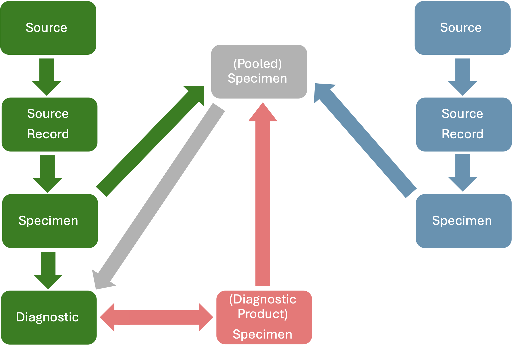

Generalities
In the data model, Specimens are tissue or material used to conduct Diagnostics (See Diagnostics) and identify hazards or other potential health threats. Specimens can be collected from Source Records or created from other Specimens (Pooled Specimens) or from products derived of Diagnostic tests (Diagnostic Products). Specimens can contain a single type of tissue coming from a single or multiple Source Records and Specimens, or multiple types of tissue coming from a single or multiple Source Records, Specimens, and Diagnostic Products (see Diagnostics below):

In summary:
Specimens can be collected from a single Group or Animal Source Records. These Specimens can contain a single type of tissue (e.g., blood) or multiple types of tissue from the same Source Record (e.g., blood and saliva).
Specimens can be created from a single Environmental and Arthropod Source Records. These Specimens can contain a single type of tissue only (e.g., a site with water can only provide water and a group of Culex sp. mosquitoes can only provide a subset of Culex sp. mosquitoes).
Specimens can be created by mixing the tissue sourced by many Group, Animal, Environmental, and Arthropod Source Records. Depending on the type of Source Records involved and the tissues provided by each one of them, these Specimens can contain a single type of tissue or several of them.
Specimens can be created from Diagnostic Products.
Pooled Specimens with a single or multiple types of tissue can be created by mixing Specimens from a single or multiple Source Records with a single or multiple types of tissue, Specimens from Diagnostic Products, and other Pooled Specimens with a single or multiple types of tissue.
Specimens are characterized by Specimen ID, Tissue Type, Specimen Original Amount, Specimen Current Amount, their Origin, Ownership, among others (see Data Dictionary). Moreover, Specimens are stored and changes in the storage or movement of the Specimens from one storage facility to another can be multiple over time. Similarly, Specimens can be exported multiple times. Changes in storage associated with an exportation must occur after the exportation is completed and the Specimen can be stored in the destination facility.
Specimens without any amount of tissue left remain in the data model so the last storage, exportation, and use in Diagnostics can be traced.
Specimens of Group Source Records
An example of Group Source Specimen are feces collected from the bottom of a cage with animals of the same species but it is unknown which of the animals dropped the feces.
A Group Source used directly for a Diagnostic (e.g., assessment of fat in carcasses of animals belonging to a specific herd) is not a Specimen (see Sources And Source Records).
Group Source Specimens cannot be OBTAINED after the last date the Group Source was observed (the last Record of the Group Source). For example, it is possible to collect feces from a cage that restrains a Group Source longitudinally and also from the same cage after the animals of the Group Source were moved. In this case, the Specimen from the empty cage does not belong to the Group Source but to an Environmental Source. The sampling of the feces from the empty cage belongs to a different Event. To keep the connection between the corresponding Specimens, it is possible to cluster the Group Source Records and the Environmental Source Record (see Complexities).
Specimens of Animal Source Records
An example of Animal Source Specimen is 2 ml of blood taken from a lion.
An Animal Source used directly for a Diagnostic (e.g., ultrasound in an animal) is not a Specimen (see Sources And Source Records).
Animal Source Specimens cannot be OBTAINED after the last date the Animal Source was observed (the last Record of the Animal Source). For example, it is possible to collect feces from a cage that restrained an Animal Source longitudinally and also from the same cage after the animal was moved. In this case, the Specimen from the empty cage does not belong to the Animal Source but to an Environmental Source. The sampling of the feces from the empty cage belongs to a different Event. To keep the connection between the corresponding Specimens, it is possible to cluster the Animal Source Records and the Environmental Source Record (see Complexities).
The data model DOES accept Animal Source Specimens that are CREATED after the last date the Animal Source was documented (the last Record of the Animal Source). New Specimens can be generated during a Necropsy or from a stored Carcass. In this case, the date of Specimen creation is not necessarily the date when the Animal Source was found, when the Carcass was collected, or when the animal died, but after the storage of the Carcass or the date of the Necropsy (primary or secondary). It is possible to track if a Specimen was collected in the field (from the animal, carcass, during a field necropsy, or the ground near the animal), or in a facility from the carcass or during a primary or secondary Necropsy based on the information entered for Specimens.
Specimens from Environmental Source Records
An example of Environmental Source Specimen is 10 grams of soil collected from a specific site (Environmental Source). Another useful example are feces of unknown origin found in the field at time t (Source Record) at a specific site (Source).
In this second example it is possible to: i) collect the full feces or ii) take swabs from it. In the former case, the feces are the Source Record and the Specimen (the Specimen can be stored. The Source Record cannot be Stored). In the latter, the feces are just the Source Record whilst the swabs are the Specimens.
In the case of Environmental Source Records, their type of tissue is determined by the type of the Specimen Source Record. For example, water collected at time t (Environmental Source Record) from a pond (Environmental Source) can only yield tissue of type “water”. If a Specimen contains tissue from a single Environmental Source Record, then, the type of tissue of the Specimen must be the same type of tissue of the Environmental Source.
The data model DOES accept Environmental Source Specimens that were CREATED after the last date the Environmental Source was visited (the last Record of the Environmental Source). New Specimens can be generated from a contained Environmental Source Record (for example, a bottle with sediment that is divided in Specimens later). In this case, the date of Specimen creation is not necessarily the date when the Environmental Source Record was obtained but later.
Specimens from Arthropod Source Records
An example of Arthropod Source Specimen is the set mosquitoes of the same species coming from the same Collection. These are basically sub-groups of the mosquitoes present in the corresponding Source Record. In vector-borne disease surveillance, this last type of Specimen is usually called “pools”.
In the case of Arthropod Specimens, their type of tissue is determined by the Arthropod Source Record. If a Specimen contains tissue from a single Arthropod Source Record, then, the type of tissue of the Specimen is “arthropod” by default. In this case, the links of the Specimen with its origin allows to track the species of arthropod involved.
The data model DOES accept Arthropod Source Specimens that were CREATED after the last date the Arthropod Source was visited (the last Record of the Environmental Source). New Specimens can be generated from an Arthropod Source Record (for example, taking a new sub-set of mosquitoes from the Source Record and creating a new Specimen with mosquitoes of the species). In this case, the date of Specimen creation is not necessarily the date when the Arthropod Source Record was obtained but later.
Specimens with a mix of tissues coming from a unique or several Source Records
A bat is swabbed in its oral cavity and in its rectum but then the swabs are placed together in a tube and considered a single Specimen. Then, there is a single Specimen with a unique Source Record origin and with two types of tissue: “rectal swab” and “oral swab” in a tube.
It is possible also to get blood from two bats and mix it. The data model can accommodate this case because Specimens can have multiple Source Record origins. In the example, both bled bats (Source Records) are the origin of a single Specimen with “blood” tissue consisting in mm of blood.
Similarly, it is possible to generate a Specimen by mixing tissue of different type from different Source Records. For example, the blood (tissue) of a bat captured at time t (Animal Source Record) with the feces (tissue) collected from the bottom of the roost of the same bat at time t (Group Source Record). In this case, the mixed tissue (blood from an Animal Source and Feces from a Group Source) can be included in the data model as a single Specimen with two Source Records as origin and two types of tissue.
The key here is that Specimens are generated by mixing tissue coming from different Source Records, which is different than mixing Specimens. In the data model, mixing Specimens means mixing data Units already documented (see next).
Specimens from Diagnostic Products
Products generated by a Diagnostic method (see Diagnostic Products as Specimens below) can be stored and used as Specimen in further Diagnostics (e.g., use cDNA created as part of Diagnostic A used in a new RT-PCR, Diagnostic B). The data model can accommodate Diagnostic Products to be used as Specimens in future Diagnostics. In this case, the origin of these new “Specimens” are specific Diagnostic and not Source Records, and their type is a diagnostic product such as cDNA. The remaining properties of a Specimen from a Diagnostic Product are the same as for Specimens from Source Records (see Data Dictionary).
Diagnostic Products must be added to the data model as a Specimen, so this Specimen can be pooled with other Specimens.
Pooled Specimens
Specimens can be created by mixing other Specimens of any origin. For example, mixing a Specimen from an Arthropod Source, a Specimen from an Animal Source, a Specimen from an Environmental Source, and a Specimen from an Arthropod Source (see below). The origin of Pooled Specimens is tracked in the data model. In the example, the origin of the Specimen is four Specimens and the new Specimen has potentially four types of tissue. The remaining properties are the same as for Specimens from Source Records (see Data Dictionary).
Specimens in Containers
In situations where space or materials are limited, it is possible that multiple Specimens are stored in a unique container. This approach is clearly not ideal because it can lead to cross-contamination and make actual Specimen tracing more complex. However, the data model has Container Identifier as a property of Specimens (see Data Dictionary). Specific properties for each individual Specimen within the container, such as type, quantity, etc, should allow their visual identification within the container.